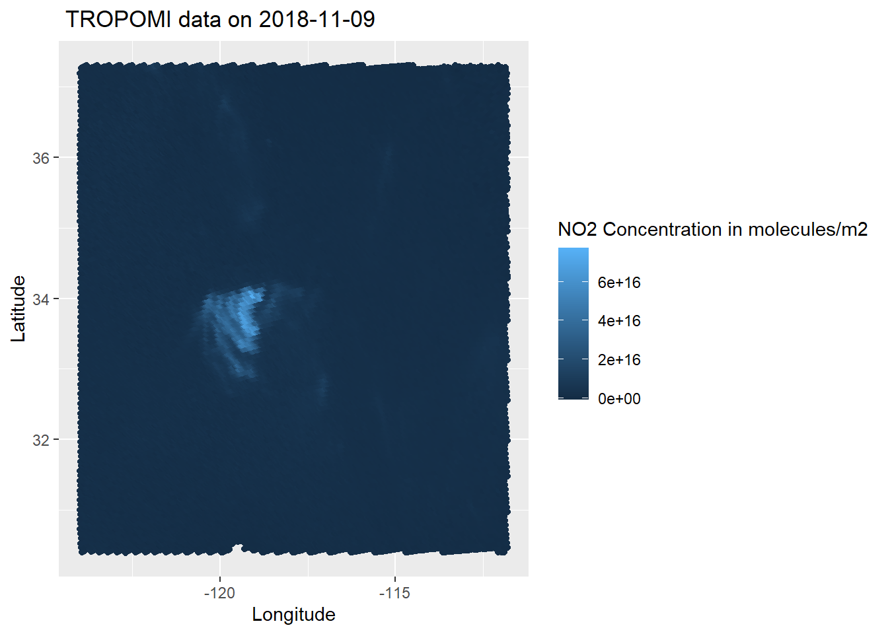

Statistical Comparision of NASA-TROPOMI - Satellite and GEOS-CF - Model Data
Shruti Jagini.
Introduction
Wildfires in California occur regularly, these have significantly contributed in shaping the nature over the past century. Southern California is the highest fire prone regions of the world, its predominant forests have evolved to thrive on the phenomenon of wildfires. Over the past decades the fires have caused significant damage and loss of both property, human and animal life. As a result of these wildfires, a number of pollutants such as, oxides of nitrogen, oxides of sulfur, methane, carbon monoxide are released into the atmosphere. This project deals with statistical comparison between the satellite data (NASA-TROPOMI), and a geographical model data (GEOS-CF) with respect to NO2 and CO concentrations emitted from California wildfires.
NASA-TROPOMI
The TROPOspheric Monitoring Instrument (TROPOMI) is a satellite instrument which is on board the Copernicus Sentinel-5 Precursor satellite. The Sentinel-5 Precursor (S5P) is launched by the European Space Agency (ESA). The tropospheric monitoring instrument covers the wavelength of ultraviolet-visible (270 nm to 495 nm), near infrared region (675 nm to 775 nm) and shortwave infrared (2305 nm - 2385 nm).This instrument provides measurements on concentrations of various pollutants and components of atmosphere like ozone, NO2 , SO2, CH4 , CO, formaldehyde, aerosols and clouds.
GEOS-CF
The GEOS-Chem is a global 3-D model which is used for monitoring atmospheric chemistry, it is driven by assimilated meteorological observations from the Goddard Earth Observing System (GEOS).This model takes into account about 220 reactive species and 720 reactions. GEOS-CF works by taking into account atmospheric dynamics such as wind speed and chemistry of pollutants (such as their chemical reactions, dispersion, reactivity) in predicting their concentrations.
So, since satellite captures real time data and model predicts data based on factors, the goal of this project is to analyze how accurate the model data is to satellite data with respect to the days with and without fire counts.
Materials and Methods
The NASA-TROPOMI satellite data for analyzing NO2 concentration is obtained from GES-DISC Website. After accessing the website, I have specified the latitude, longitude boundaries, parameters that I wish to sample (quality index, surface pressure.. etc) and the time period in which we want to obtain the data. Once this is done,files were downloaded in .txt format. These files have been further converted to .mat files using a python script. The .mat files generated from the python script were further used in R for analysis.
The GEOS-CF model data for both NO2 is obtained from GEOS-CF Website. After accessing the website I chose the day on which I wanted to obtain the data. The daat are in the form of .h5 files. By default GEOS-CF data is provided at latitude and longitude ranges of -90 to 90 and -180 to 180 respectively.
MODIS data for analyzing wildfires is obtained form MODIS Website and from the World View Website. After accessing the website, I have specified the latitude and longitude boundaries, type of satellite, and file formats. I chose the file format to csv.I further used this csv file for analysis in R.
Analyzisng MODIS fire data
The MODIS fire data are in the form of csv files, once these files are read into R, they are in the form of data frames, the number of times a brightness value occurs in a day is taken as a fire count for that day. Number of fire counts on each day are obtained. Based on these fire counts I have filtered the study dates and would be further focusing on them.
Analyzisng TROPOMI NO2 data
The .mat files read in R were further filtered based on quality index. Once this is done, the data is converted to ordinary datetime format from matlab datetime format using the “lubridate” package and ymd() function. This makes the data into a readable format.
Analyzing GEOS-CF model data for NO2
GEOS-CF model data are in the form of .h5 files, the data in these files is in the form of a meshgrid/ matrix. Longitude and Latitude values are distributed in the form of a grid, and each point in the grid (longitude,latitude) pair has a concentration value. GEOS-CF model data on specific dates is chosen based on the MODIS data, the days on which MODIS fire counts were found to be significant were taken into consideration.
Data Handling
Data for TROPOMI NO~2 is represented in the from of maps with longitudes varying on x-axis and latitudes varying on y-axis. GEOS-CF model data is also represented in the same way.
The following packages were used in the project:
library(pracma)library(R.matlab)
library(tidyverse)
library(leaflet)
library(kableExtra) library(dplyr)
library(R.matlab)
library(lubridate)
library(ncdf4)
library(ggplot2)
library(devtools)
library(Bilinear)
library(interp) MODIS:
Reading fire data
modis_data <- read.csv('C:\\Users\\shrut\\Desktop\\SDS Project\\fire_archive_M6_164945.csv')Setting up Latitude, Longitude boundaries and sorting data
modis_data_lat_filter <- modis_data[modis_data$latitude > 30.4 & modis_data$latitude < 37.3 ,]
modis_data_lon_filter <- modis_data_lat_filter[modis_data_lat_filter$longitude > -124 & modis_data_lat_filter$longitude < -111.8 ,]
dates <- c(modis_data_lon_filter['acq_date'])
count_table <- as.data.frame(table(dates))
counts_table_order <- count_table[order(-count_table$Freq),]From the above code we can have a clear view about the dates where fire was significant, the table counts_table shows the frequency of fire counts on each day for the year 2018.
So, since the days with and without fire counts would be comapred, let’s first begin with the days where fire counts were significant.
TROPOMI
August
Reading TROPOMI NO2 Data
memory.limit(size=56000)## [1] 56000no2_data_filename <- readMat('C:\\Users\\shrut\\Desktop\\SDS Project\\data files\\CONUS_2018_08.mat', package='rmatio')November
Reading TROPOMI NO2 Data
memory.limit(size=56000)## [1] 56000no2_data_filename_nov <- readMat('C:\\Users\\shrut\\Downloads\\CONUS_2018_11.mat', package='rmatio')Now the TROPOMI data is read for both the months of August and November, the code below shows working and handing .mat data.
August
Defining parameters for TROPOMI NO2 Data
lat <- no2_data_filename[["output.subset"]][5]
no2_lat <- lat[[1]]
lon <- no2_data_filename[["output.subset"]][6]
no2_lon <- lon[[1]]
conc <- no2_data_filename[["output.subset"]][8]
no2_conc <- conc[[1]]*6.022*10**19
values_day <- no2_data_filename[["output.subset"]][12]
no2_dates <- values_day[[1]]
qa_values <- no2_data_filename[["output.subset"]][7]
no2_qa <- qa_values[[1]]Setting up Latitude, Longitude boundaries and changing date-time format
no2_data<- data.frame("Latitude" = c(no2_lat), "Longitude" = c(no2_lon), "NO2_Concentration" = c(no2_conc),"QA_Value" = c(no2_qa), "Dates" = c(no2_dates))
filter_1 <- filter(no2_data, Latitude > 30.4 & Latitude < 37.3 & Longitude > -124 & Longitude < -111.8)
filter_2 <- filter(filter_1, "QA_value" > 0.5)
Matlab2Rdate <- function(val) as.Date(val - 1, origin = '0000-01-01')
change_dates <- Matlab2Rdate(filter_2[["Dates"]])
modified_date <- ymd(change_dates)November
Defining parameters for TROPOMI NO2 Data
lat_nov <- no2_data_filename_nov[["output.subset"]][5]
no2_lat_nov <- lat_nov[[1]]
lon_nov <- no2_data_filename_nov[["output.subset"]][6]
no2_lon_nov <- lon_nov[[1]]
conc_nov <- no2_data_filename_nov[["output.subset"]][8]
no2_conc_nov <- conc_nov[[1]]*6.022*10**19
values_day_nov <- no2_data_filename_nov[["output.subset"]][12]
no2_dates_nov <- values_day_nov[[1]]
qa_values_nov <- no2_data_filename_nov[["output.subset"]][7]
no2_qa_nov <- qa_values_nov[[1]]Setting up Latitude, Longitude boundaries and changing date-time format
no2_data_nov<- data.frame("Latitude_nov" = c(no2_lat_nov), "Longitude_nov" = c(no2_lon_nov), "NO2_Concentration_nov" = c(no2_conc_nov),"QA_Value_nov" = c(no2_qa_nov), "Dates_nov" = c(no2_dates_nov))
filter_1_nov <- filter(no2_data_nov, Latitude_nov > 30.4 & Latitude_nov < 37.3 & Longitude_nov > -124 & Longitude_nov < -111.8)
filter_2_nov <- filter(filter_1_nov, "QA_value_nov" > 0.5)
Matlab2Rdate_nov <- function(val) as.Date(val - 1, origin = '0000-01-01')
change_dates_nov <- Matlab2Rdate_nov(filter_2_nov[["Dates_nov"]])
modified_date_nov <- ymd(change_dates_nov)Now since the data is read and converted into readable form, the next step is sorting the data based on fire and non-fire dates.
Sorting data based on fire dates
fire_date_plot_aug_8 <- filter(filter_2, modified_date == '2018-08-08')
fire_date_plot_nov_11 <- filter(filter_2_nov, modified_date_nov == '2018-11-09')Sorting data based on non-fire dates
filter_2_nov$converted_dates_nov<- c(modified_date_nov)
fire_date_plot_nov_22 <- filter(filter_2_nov, modified_date_nov == '2018-11-22')
fire_date_plot_nov_23 <- filter(filter_2_nov, modified_date_nov == '2018-11-23')
fire_date_plot_nov_28 <- filter(filter_2_nov, modified_date_nov == '2018-11-28')
fire_date_plot_aug_18 <- filter(filter_2, modified_date == '2018-08-18')
fire_date_plot_aug_24 <- filter(filter_2, modified_date == '2018-08-24')
fire_date_plot_aug_25 <- filter(filter_2, modified_date == '2018-08-25')Now since the TROPOMI data is sorted based on fire and non-fire dates, the next step would be moving to handling GEOS-CF model data.
GEOS-CF
August
Reading NO2 Data for fire dates
setwd('C:\\Users\\shrut\\Downloads')
data <- nc_open('GEOS-CF.v01.rpl.xgc_tavg_1hr_g1440x721_x1.20180808_0530z.nc4')Defining parameters for NO2 Data
lon_geos <- ncvar_get(data, "lon")
lat_geos <- ncvar_get(data, "lat")
CONC_geos_1 <- ncvar_get(data, "TOTCOL_NO2")
CONC_geos <- CONC_geos_1*10**15Setting up Latitude, Longitude boundaries and creating a Longitude, Latitude meshgrid
Latitude <- c(lat_geos)
Longitude <- c(lon_geos)
Lat_filter <- Latitude[Latitude > 30.4 & Latitude < 37.3]
Lon_filter <- Longitude[Longitude > -124 & Longitude < -111.8]
Lat_lon_grid <- meshgrid(Longitude, Latitude)
plot_data_aug_8 <- data.frame("y_lat" = c(Lat_lon_grid[["Y"]]), "x_lon" = c(Lat_lon_grid[["X"]]), "z_Con" = c(CONC_geos))Since TROPOMI data is from the NASA-TROPOMI satellite, the data is discontinuous since satellite is not effective in capturing data at all locations. And as GEOS-CF is a model, it is continuous and has data values at all locations. As both the data sets are differing in terms of locations, it wouldn’t be appropriate to compare them. THerefore, it would be appropriate when the GEOS-CF data are interpolated at TROPOMI locations. The code shown below does the following.
Interpolating GEOS-CF data at TROPOMI locations
y1 <- Latitude
x1 <- Longitude
z1 <- CONC_geos
x0 <- fire_date_plot_aug_8['Longitude']
y0 <- fire_date_plot_aug_8['Latitude']
x2 <- as.numeric(unlist(x0))
y2<- as.numeric(unlist(y0))
latlon_aug_8.bil <- bilinear(x1,y1,z1,x2,y2)November
Reading NO2 Data for fire dates
setwd('C:\\Users\\shrut\\Downloads')
data_nov_11 <- nc_open('GEOS-CF.v01.rpl.xgc_tavg_1hr_g1440x721_x1.20180911_0930z.nc4')Defining parameters for NO2 Data
lon_geos_nov <- ncvar_get(data_nov_11, "lon")
lat_geos_nov <- ncvar_get(data_nov_11, "lat")
CONC_geos_nov_1 <- ncvar_get(data_nov_11, "TOTCOL_NO2")
CONC_geos_nov <- CONC_geos_nov_1*10**15Setting up Latitude, Longitude boundaries and creating a Longitude, Latitude meshgrid
Latitude_nov <- c(lat_geos_nov)
Longitude_nov <- c(lon_geos_nov)
Lat_filter_nov <- Latitude_nov[Latitude_nov > 30.4 & Latitude_nov < 37.3]
Lon_filter_nov <- Longitude_nov[Longitude_nov > -124 & Longitude_nov < -111.8]
Lat_lon_grid_nov <- meshgrid(Longitude_nov, Latitude_nov)
plot_data_nov_11 <- data.frame("y_lat_nov" = c(Lat_lon_grid_nov[["Y"]]), "x_lon_nov" = c(Lat_lon_grid_nov[["X"]]), "z_Con_nov" = c(CONC_geos_nov))Interpolating GEOS-CF data at TROPOMI locations
y1_nov <- Latitude_nov
x1_nov <- Longitude_nov
z1_nov <- CONC_geos_nov
x0_nov <- fire_date_plot_nov_11['Longitude_nov']
y0_nov <- fire_date_plot_nov_11['Latitude_nov']
x2_nov <- as.numeric(unlist(x0_nov))
y2_nov<- as.numeric(unlist(y0_nov))
latlon_nov_11.bil <- bilinear(x1_nov,y1_nov,z1_nov,x2_nov,y2_nov)
plot_data_interp_nov_11 <- data.frame("y_lat_interp_nov" = c(latlon_nov_11.bil[["y"]]), "x_lon_interp_nov" = c(latlon_nov_11.bil[["x"]]), "z_Con_interp_nov" = c(latlon_nov_11.bil[["z"]]*0.001))August
Reading NO2 Data for non-fire dates
setwd('C:\\Users\\shrut\\Downloads\\r-project file\\no-fire dates')
data_aug_18 <- nc_open('GEOS-CF.v01.rpl.xgc_tavg_1hr_g1440x721_x1.20180818_0630z.nc4')
data_aug_24 <- nc_open('GEOS-CF.v01.rpl.xgc_tavg_1hr_g1440x721_x1.20180824_0530z.nc4')
data_aug_25 <- nc_open('GEOS-CF.v01.rpl.xgc_tavg_1hr_g1440x721_x1.20180825_0530z.nc4')Defining parameters for NO2 Data
lon_geos_aug_18 <- ncvar_get(data_aug_18, "lon")
lat_geos_aug_18 <- ncvar_get(data_aug_18, "lat")
CONC_geos_aug_18_1 <- ncvar_get(data_aug_18, "TOTCOL_NO2")
CONC_geos_aug_18 <- CONC_geos_aug_18_1*10**15
lon_geos_aug_24 <- ncvar_get(data_aug_24, "lon")
lat_geos_aug_24 <- ncvar_get(data_aug_24, "lat")
CONC_geos_aug_24_1 <- ncvar_get(data_aug_24, "TOTCOL_NO2")
CONC_geos_aug_24 <- CONC_geos_aug_24_1*10**15
lon_geos_aug_25 <- ncvar_get(data_aug_25, "lon")
lat_geos_aug_25 <- ncvar_get(data_aug_25, "lat")
CONC_geos_aug_25_1 <- ncvar_get(data_aug_25, "TOTCOL_NO2")
CONC_geos_aug_25 <- CONC_geos_aug_25_1*10**15Setting up Latitude, Longitude boundaries and creating a Longitude, Latitude meshgrid
Latitude_aug_18 <- c(lat_geos_aug_18)
Longitude_aug_18 <- c(lon_geos_aug_18)
Lat_filter_aug_18 <- Latitude_aug_18[Latitude_aug_18 > 30.4 & Latitude_aug_18 < 37.3]
Lon_filter_aug_18 <- Longitude_aug_18[Longitude_aug_18 > -124 & Longitude_aug_18 < -111.8]
Lat_lon_grid_aug_18 <- meshgrid(Longitude_aug_18, Latitude_aug_18)
Latitude_aug_24 <- c(lat_geos_aug_24)
Longitude_aug_24 <- c(lon_geos_aug_24)
Lat_filter_aug_24 <- Latitude_aug_24[Latitude_aug_24 > 30.4 & Latitude_aug_24 < 37.3]
Lon_filter_aug_24 <- Longitude_aug_24[Longitude_aug_24 > -124 & Longitude_aug_24 < -111.8]
Lat_lon_grid_aug_24 <- meshgrid(Longitude_aug_24, Latitude_aug_24)
Latitude_aug_25 <- c(lat_geos_aug_25)
Longitude_aug_25 <- c(lon_geos_aug_25)
Lat_filter_aug_25 <- Latitude_aug_25[Latitude_aug_25 > 30.4 & Latitude_aug_25 < 37.3]
Lon_filter_aug_25 <- Longitude_aug_25[Longitude_aug_25 > -124 & Longitude_aug_25 < -111.8]
Lat_lon_grid_aug_25 <- meshgrid(Longitude_aug_25, Latitude_aug_25)
plot_data_aug_18 <- data.frame("y_lat_nov" = c(Lat_lon_grid_aug_18[["Y"]]), "x_lon_nov" = c(Lat_lon_grid_aug_18[["X"]]), "z_Con_nov" = c(CONC_geos_aug_18))
plot_data_aug_24 <- data.frame("y_lat_nov" = c(Lat_lon_grid_aug_24[["Y"]]), "x_lon_nov" = c(Lat_lon_grid_aug_24[["X"]]), "z_Con_nov" = c(CONC_geos_aug_24))
plot_data_aug_25 <- data.frame("y_lat_nov" = c(Lat_lon_grid_aug_25[["Y"]]), "x_lon_nov" = c(Lat_lon_grid_aug_25[["X"]]), "z_Con_nov" = c(CONC_geos_aug_25))Interpolating GEOS-CF data at TROPOMI locations for non fire dates
y1_aug_18 <- Latitude_aug_18
x1_aug_18 <- Longitude_aug_18
z1_aug_18 <- CONC_geos_aug_18
x0_aug_18 <- fire_date_plot_aug_18['Longitude']
y0_aug_18 <- fire_date_plot_aug_18['Latitude']
x2_aug_18 <- as.numeric(unlist(x0_aug_18))
y2_aug_18<- as.numeric(unlist(y0_aug_18))
latlon_aug_18.bil <- bilinear(x1_aug_18,y1_aug_18,z1_aug_18,x2_aug_18,y2_aug_18)
plot_data_interp_aug_18 <- data.frame("y_lat_interp_nov" = c(latlon_aug_18.bil[["y"]]), "x_lon_interp_nov" = c(latlon_aug_18.bil[["x"]]), "z_Con_interp_nov" = c(latlon_aug_18.bil[["z"]]*0.001))
y1_aug_24 <- Latitude_aug_24
x1_aug_24 <- Longitude_aug_24
z1_aug_24 <- CONC_geos_aug_24
x0_aug_24 <- fire_date_plot_aug_24['Longitude']
y0_aug_24 <- fire_date_plot_aug_24['Latitude']
x2_aug_24 <- as.numeric(unlist(x0_aug_24))
y2_aug_24<- as.numeric(unlist(y0_aug_24))
latlon_aug_24.bil <- bilinear(x1_aug_24,y1_aug_24,z1_aug_24,x2_aug_24,y2_aug_24)
plot_data_interp_aug_24 <- data.frame("y_lat_interp_nov" = c(latlon_aug_24.bil[["y"]]), "x_lon_interp_nov" = c(latlon_aug_24.bil[["x"]]), "z_Con_interp_nov" = c(latlon_aug_24.bil[["z"]]*0.001))
y1_aug_25 <- Latitude_aug_25
x1_aug_25 <- Longitude_aug_25
z1_aug_25 <- CONC_geos_aug_25
x0_aug_25 <- fire_date_plot_aug_25['Longitude']
y0_aug_25 <- fire_date_plot_aug_25['Latitude']
x2_aug_25 <- as.numeric(unlist(x0_aug_25))
y2_aug_25<- as.numeric(unlist(y0_aug_25))
latlon_aug_25.bil <- bilinear(x1_aug_25,y1_aug_25,z1_aug_25,x2_aug_25,y2_aug_25)
plot_data_interp_aug_25 <- data.frame("y_lat_interp_nov" = c(latlon_aug_25.bil[["y"]]), "x_lon_interp_nov" = c(latlon_aug_25.bil[["x"]]), "z_Con_interp_nov" = c(latlon_aug_25.bil[["z"]]*0.001))Interpolating GEOS-CF data at TROPOMI locations for fire dates
y1 <- Latitude
x1 <- Longitude
z1 <- CONC_geos
x0 <- fire_date_plot_aug_8['Longitude']
y0 <- fire_date_plot_aug_8['Latitude']
x2 <- as.numeric(unlist(x0))
y2<- as.numeric(unlist(y0))
latlon_aug_8.bil <- bilinear(x1,y1,z1,x2,y2)
plot_data_interp_aug_8 <- data.frame("y_lat_interp" = c(latlon_aug_8.bil[["y"]]), "x_lon_interp" = c(latlon_aug_8.bil[["x"]]), "z_Con_interp" = c(latlon_aug_8.bil[["z"]]*0.001))November
Reading NO2 Data for non-fire dates
setwd('C:\\Users\\shrut\\Downloads\\r-project file\\no-fire dates')
data_nov_22 <- nc_open('GEOS-CF.v01.rpl.xgc_tavg_1hr_g1440x721_x1.20181122_0630z.nc4')
data_nov_23 <- nc_open('GEOS-CF.v01.rpl.xgc_tavg_1hr_g1440x721_x1.20181123_0630z.nc4')
data_nov_28 <- nc_open('GEOS-CF.v01.rpl.xgc_tavg_1hr_g1440x721_x1.20181128_0730z.nc4')Defining parameters for NO2 Data
lon_geos_nov_22 <- ncvar_get(data_nov_22, "lon")
lat_geos_nov_22 <- ncvar_get(data_nov_22, "lat")
CONC_geos_nov_22_1 <- ncvar_get(data_nov_22, "TOTCOL_NO2")
CONC_geos_nov_22 <- CONC_geos_nov_22_1*10**15
lon_geos_nov_23 <- ncvar_get(data_nov_23, "lon")
lat_geos_nov_23 <- ncvar_get(data_nov_23, "lat")
CONC_geos_nov_23_1 <- ncvar_get(data_nov_23, "TOTCOL_NO2")
CONC_geos_nov_23 <- CONC_geos_nov_23_1*10**15
lon_geos_nov_28 <- ncvar_get(data_nov_28, "lon")
lat_geos_nov_28 <- ncvar_get(data_nov_28, "lat")
CONC_geos_nov_28_1 <- ncvar_get(data_nov_28, "TOTCOL_NO2")
CONC_geos_nov_28 <- CONC_geos_nov_28_1*10**15Setting up Latitude, Longitude boundaries and creating a Longitude, Latitude meshgrid
Latitude_nov_22 <- c(lat_geos_nov_22)
Longitude_nov_22 <- c(lon_geos_nov_22)
Lat_filter_nov_22 <- Latitude_nov_22[Latitude_nov_22 > 30.4 & Latitude_nov_22 < 37.3]
Lon_filter_nov_22 <- Longitude_nov_22[Longitude_nov_22 > -124 & Longitude_nov_22 < -111.8]
Lat_lon_grid_nov_22 <- meshgrid(Longitude_nov_22, Latitude_nov_22)
Latitude_nov_23 <- c(lat_geos_nov_23)
Longitude_nov_23 <- c(lon_geos_nov_23)
Lat_filter_nov_23 <- Latitude_nov_23[Latitude_nov_23 > 30.4 & Latitude_nov_23 < 37.3]
Lon_filter_nov_23 <- Longitude_nov_23[Longitude_nov_23 > -124 & Longitude_nov_23 < -111.8]
Lat_lon_grid_nov_23 <- meshgrid(Longitude_nov_23, Latitude_nov_23)
Latitude_nov_28 <- c(lat_geos_nov_28)
Longitude_nov_28 <- c(lon_geos_nov_28)
Lat_filter_nov_28 <- Latitude_nov_28[Latitude_nov_28 > 30.4 & Latitude_nov_28 < 37.3]
Lon_filter_nov_28 <- Longitude_nov_28[Longitude_nov_28 > -124 & Longitude_nov_28 < -111.8]
Lat_lon_grid_nov_28 <- meshgrid(Longitude_nov_28, Latitude_nov_28)
plot_data_nov_22 <- data.frame("y_lat_nov" = c(Lat_lon_grid_nov_22[["Y"]]), "x_lon_nov" = c(Lat_lon_grid_nov_22[["X"]]), "z_Con_nov" = c(CONC_geos_nov_22))
plot_data_nov_23 <- data.frame("y_lat_nov" = c(Lat_lon_grid_nov_23[["Y"]]), "x_lon_nov" = c(Lat_lon_grid_nov_23[["X"]]), "z_Con_nov" = c(CONC_geos_nov_23))
plot_data_nov_28 <- data.frame("y_lat_nov" = c(Lat_lon_grid_nov_28[["Y"]]), "x_lon_nov" = c(Lat_lon_grid_nov_28[["X"]]), "z_Con_nov" = c(CONC_geos_nov_28))Interpolating GEOS-CF data at TROPOMI locations for non fire dates
y1_nov_22 <- Latitude_nov_22
x1_nov_22 <- Longitude_nov_22
z1_nov_22 <- CONC_geos_nov_22
x0_nov_22 <- fire_date_plot_nov_22['Longitude_nov']
y0_nov_22 <- fire_date_plot_nov_22['Latitude_nov']
x2_nov_22 <- as.numeric(unlist(x0_nov_22))
y2_nov_22<- as.numeric(unlist(y0_nov_22))
latlon_nov_22.bil <- bilinear(x1_nov_22,y1_nov_22,z1_nov_22,x2_nov_22,y2_nov_22)
plot_data_interp_nov_22 <- data.frame("y_lat_interp_nov" = c(latlon_nov_22.bil[["y"]]), "x_lon_interp_nov" = c(latlon_nov_22.bil[["x"]]), "z_Con_interp_nov" = c(latlon_nov_22.bil[["z"]]*0.001))
y1_nov_23 <- Latitude_nov_23
x1_nov_23 <- Longitude_nov_23
z1_nov_23 <- CONC_geos_nov_23
x0_nov_23 <- fire_date_plot_nov_23['Longitude_nov']
y0_nov_23 <- fire_date_plot_nov_23['Latitude_nov']
x2_nov_23 <- as.numeric(unlist(x0_nov_23))
y2_nov_23<- as.numeric(unlist(y0_nov_23))
latlon_nov_23.bil <- bilinear(x1_nov_23,y1_nov_23,z1_nov_23,x2_nov_23,y2_nov_23)
plot_data_interp_nov_23 <- data.frame("y_lat_interp_nov" = c(latlon_nov_23.bil[["y"]]), "x_lon_interp_nov" = c(latlon_nov_23.bil[["x"]]), "z_Con_interp_nov" = c(latlon_nov_23.bil[["z"]]*0.001))
y1_nov_28 <- Latitude_nov_28
x1_nov_28 <- Longitude_nov_28
z1_nov_28 <- CONC_geos_nov_28
x0_nov_28 <- fire_date_plot_nov_28['Longitude_nov']
y0_nov_28 <- fire_date_plot_nov_28['Latitude_nov']
x2_nov_28 <- as.numeric(unlist(x0_nov_28))
y2_nov_28<- as.numeric(unlist(y0_nov_28))
latlon_nov_28.bil <- bilinear(x1_nov_28,y1_nov_28,z1_nov_28,x2_nov_28,y2_nov_28)
plot_data_interp_nov_28 <- data.frame("y_lat_interp_nov" = c(latlon_nov_28.bil[["y"]]), "x_lon_interp_nov" = c(latlon_nov_28.bil[["x"]]), "z_Con_interp_nov" = c(latlon_nov_28.bil[["z"]]*0.001))Interpolating GEOS-CF data at TROPOMI locations for fire dates
y1_nov <- Latitude_nov
x1_nov <- Longitude_nov
z1_nov <- CONC_geos_nov
x0_nov <- fire_date_plot_nov_11['Longitude_nov']
y0_nov <- fire_date_plot_nov_11['Latitude_nov']
x2_nov <- as.numeric(unlist(x0_nov))
y2_nov<- as.numeric(unlist(y0_nov))
latlon_nov_11.bil <- bilinear(x1_nov,y1_nov,z1_nov,x2_nov,y2_nov)
plot_data_interp_nov_11 <- data.frame("y_lat_interp_nov" = c(latlon_nov_11.bil[["y"]]), "x_lon_interp_nov" = c(latlon_nov_11.bil[["x"]]), "z_Con_interp_nov" = c(latlon_nov_11.bil[["z"]]*0.001))Now that the interpolation is completed, let us compare the TROPIMI and GEOS-Interpolated TROPOMI data by visualizing it in the form of plots. ### August #### Tropomi plots for non fire dates
trop_plot_aug_18 <- ggplot(fire_date_plot_aug_18, aes(x=Longitude,y=Latitude, color= NO2_Concentration)) +
geom_point()+
xlab("Longitude")+
ylab("Latitude")+
labs(color='NO2 Concentration in molecules/m2')+
ggtitle("TROPOMI data on 2018-08-18")
trop_plot_aug_24 <- ggplot(fire_date_plot_aug_24, aes(x=Longitude,y=Latitude, color= NO2_Concentration)) +
geom_point()+
xlab("Longitude")+
ylab("Latitude")+
labs(color='NO2 Concentration in molecules/m2')+
ggtitle("TROPOMI data on 2018-08-24")
trop_plot_aug_25 <- ggplot(fire_date_plot_aug_25, aes(x=Longitude,y=Latitude, color= NO2_Concentration)) +
geom_point()+
xlab("Longitude")+
ylab("Latitude")+
labs(color='NO2 Concentration in molecules/m2')+
ggtitle("TROPOMI data on 2018-08-25")Tropomi plots for fire dates
trop_plot_aug_8 <- ggplot(plot_data_interp_aug_8,aes(x_lon_interp, y = y_lat_interp, color = z_Con_interp))+
geom_point()+
xlab("Longitude")+
ylab("Latitude")+
labs(color='NO2 Concentration in molecules/m2')+
ggtitle("GEOS-CF Interppolated TROPOMI on 2018-08-08")November
Tropomi plots for non fire dates
trop_plot_nov_22 <- ggplot(fire_date_plot_nov_22, aes(x=Longitude_nov,y=Latitude_nov, color= NO2_Concentration_nov))+
geom_point()+
xlab("Longitude")+
ylab("Latitude")+
labs(color='NO2 Concentration in molecules/m2')+
ggtitle("TROPOMI data on 2018-11-22")
trop_plot_nov_23 <- ggplot(fire_date_plot_nov_23, aes(x=Longitude_nov,y=Latitude_nov, color= NO2_Concentration_nov)) +
geom_point()+
xlab("Longitude")+
ylab("Latitude")+
labs(color='NO2 Concentration in molecules/m2')+
ggtitle("TROPOMI data on 2018-11-23")
trop_plot_nov_28 <- ggplot(fire_date_plot_nov_28, aes(x=Longitude_nov,y=Latitude_nov, color= NO2_Concentration_nov)) +
geom_point()+
xlab("Longitude")+
ylab("Latitude")+
labs(color='NO2 Concentration in molecules/m2')+
ggtitle("TROPOMI data on 2018-11-28")Tropomi plots for fire dates
trop_plot_nov_11 <- ggplot(fire_date_plot_nov_11, aes(x=Longitude_nov,y=Latitude_nov, color= NO2_Concentration_nov)) +
geom_point()+
xlab("Longitude")+
ylab("Latitude")+
labs(color='NO2 Concentration in molecules/m2')+
ggtitle(" TROPOMI data on 2018-11-09")August
GEOS-CF interpolated TROPOMI plots for non fire dates
interp_plot_aug_18 <- ggplot(plot_data_interp_aug_18,aes(x_lon_interp_nov, y = y_lat_interp_nov, color = z_Con_interp_nov))+
geom_point()+
xlab('Longitude')+
ylab('Latitude')+
labs(color = 'NO2 Concentration in molecules/m2')+
ggtitle("GEOS-CF Interppolated TROPOMI on 2018-08-18")
interp_plot_aug_24 <- ggplot(plot_data_interp_aug_24,aes(x_lon_interp_nov, y = y_lat_interp_nov, color = z_Con_interp_nov))+
geom_point()+
xlab("Longitude")+
ylab("Latitude")+
labs(color='NO2 Concentration in molecules/m2')+
ggtitle("GEOS-CF Interppolated TROPOMI on 2018-08-24")
interp_plot_aug_25 <- ggplot(plot_data_interp_aug_25,aes(x_lon_interp_nov, y = y_lat_interp_nov, color = z_Con_interp_nov))+
geom_point()+
xlab("Longitude")+
ylab("Latitude")+
labs(color='NO2 Concentration in molecules/m2')+
ggtitle("GEOS-CF Interppolated TROPOMI on 2018-08-25")GEOS-CF interpolated TROPOMI plots for fire dates
interp_plot_aug_8 <- ggplot(plot_data_interp_aug_8,aes(x_lon_interp, y = y_lat_interp, color = z_Con_interp))+
geom_point()+
xlab("Longitude")+
ylab("Latitude")+
labs(color='NO2 Concentration in molecules/m2')+
ggtitle("GEOS-CF Interppolated TROPOMI on 2018-08-08")November
GEO-CF interpolated TROPOMI plots for non fire dates
interp_plot_nov_22 <- ggplot(plot_data_interp_nov_22,aes(x_lon_interp_nov, y = y_lat_interp_nov, color = z_Con_interp_nov))+
geom_point()+
xlab("Longitude")+
ylab("Latitude")+
labs(color='NO2 Concentration in molecules/m2')+
ggtitle("GEOS-CF Interppolated TROPOMI on 2018-11-22")
interp_plot_nov_23 <- ggplot(plot_data_interp_nov_23,aes(x_lon_interp_nov, y = y_lat_interp_nov, color = z_Con_interp_nov))+
geom_point()+
xlab("Longitude")+
ylab("Latitude")+
labs(color='NO2 Concentration in molecules/m2')+
ggtitle("GEOS-CF Interppolated TROPOMI on 2018-11-23")
interp_plot_nov_28 <- ggplot(plot_data_interp_nov_28,aes(x_lon_interp_nov, y = y_lat_interp_nov, color = z_Con_interp_nov))+
geom_point()+
xlab("Longitude")+
ylab("Latitude")+
labs(color='NO2 Concentration in molecules/m2')+
ggtitle("GEOS-CF Interppolated TROPOMI on 2018-11-28")GEOS-CF interpolated TROPOMI plots for fire dates
interp_plot_nov_11 <- ggplot(plot_data_interp_nov_11,aes(x_lon_interp_nov, y = y_lat_interp_nov, color = z_Con_interp_nov))+
geom_point()+
xlab("Longitude")+
ylab("Latitude")+
labs(color='NO2 Concentration in molecules/m2')+
ggtitle("GEOS-CF Interppolated TROPOMI on 2018-09-11")Statistical Analysis
Now since the data is ready, the next step would be going with statistical analysis. Firstly, going with regression analysis. This would involve creating a regression model between TROPOMI and GEOS-CF interpolated TROPOMI data and thereby comparing their correlation coefficients. The regression analysis is as shown below:
Regression Analysis
August
Non-fire dates
lm_data_frame_aug_18 <- data.frame("TROPOMI" = c(fire_date_plot_aug_18['NO2_Concentration']), "GEOS-INTERP_tropomi" = c(plot_data_interp_aug_18['z_Con_interp_nov']))
linearMod_aug_18 <- lm(NO2_Concentration ~z_Con_interp_nov, data=lm_data_frame_aug_18)
lm_data_frame_aug_24<- data.frame("TROPOMI" = c(fire_date_plot_aug_24['NO2_Concentration']), "GEOS-INTERP_tropomi" = c(plot_data_interp_aug_24['z_Con_interp_nov']))
linearMod_aug_24 <- lm(NO2_Concentration ~z_Con_interp_nov, data=lm_data_frame_aug_24)
lm_data_frame_aug_25 <- data.frame("TROPOMI" = c(fire_date_plot_aug_25['NO2_Concentration']), "GEOS-INTERP_tropomi" = c(plot_data_interp_aug_25['z_Con_interp_nov']))
linearMod_aug_25 <- lm(NO2_Concentration ~z_Con_interp_nov, data=lm_data_frame_aug_25)Fire dates
lm_data_frame_aug_8 <- data.frame("TROPOMI" = c(fire_date_plot_aug_8['NO2_Concentration']), "GEOS-INTERP_tropomi" = c(plot_data_interp_aug_8['z_Con_interp']))
linearMod_aug_8 <- lm(NO2_Concentration ~z_Con_interp, data=lm_data_frame_aug_8)Non-fire dates
xval_aug_18 <- lm_data_frame_aug_18['NO2_Concentration']
yval_aug_18 <- lm_data_frame_aug_18['z_Con_interp_nov']
x2_aug_18 <- data.frame(yval_aug_18,xval_aug_18)
plot(x2_aug_18,ylim=c(0,5e+15), main = "August 18",xlab = 'GEOS- Interpolated at Tropomi', ylab ='Tropomi')
abline(lm(NO2_Concentration ~ z_Con_interp_nov, data = lm_data_frame_aug_18), col = "red")xval_aug_24 <- lm_data_frame_aug_24['NO2_Concentration']
yval_aug_24 <- lm_data_frame_aug_24['z_Con_interp_nov']
x2_aug_24 <- data.frame(yval_aug_24,xval_aug_24)
plot(x2_aug_24,ylim=c(0,5e+15), main = "August 24",xlab = 'GEOS- Interpolated at Tropomi', ylab ='Tropomi')
abline(lm(NO2_Concentration ~ z_Con_interp_nov, data = lm_data_frame_aug_24), col = "red")xval_aug_25 <- lm_data_frame_aug_25['NO2_Concentration']
yval_aug_25 <- lm_data_frame_aug_25['z_Con_interp_nov']
x2_aug_25 <- data.frame(yval_aug_25,xval_aug_25)
plot(x2_aug_25,ylim=c(0,5e+15), main = "August 25",xlab = 'GEOS- Interpolated at Tropomi', ylab ='Tropomi')
abline(lm(NO2_Concentration ~ z_Con_interp_nov, data = lm_data_frame_aug_25), col = "red")
Fire dates
xval <- lm_data_frame_aug_8['NO2_Concentration']
yval <- lm_data_frame_aug_8['z_Con_interp']
x2 <- data.frame(yval,xval)
plot(x2,ylim=c(0,1.0e+16))
abline(lm(NO2_Concentration ~ z_Con_interp, data = lm_data_frame_aug_8), col = "red")November
Non-fire dates
lm_data_frame_nov_22 <- data.frame("TROPOMI" = c(fire_date_plot_nov_22['NO2_Concentration_nov']), "GEOS-INTERP_tropomi" = c(plot_data_interp_nov_22['z_Con_interp_nov']))
linearMod_nov_22 <- lm(NO2_Concentration_nov ~z_Con_interp_nov, data=lm_data_frame_nov_22)
lm_data_frame_nov_23 <- data.frame("TROPOMI" = c(fire_date_plot_nov_23['NO2_Concentration_nov']), "GEOS-INTERP_tropomi" = c(plot_data_interp_nov_23['z_Con_interp_nov']))
linearMod_nov_23 <- lm(NO2_Concentration_nov ~z_Con_interp_nov, data=lm_data_frame_nov_23)
lm_data_frame_nov_28 <- data.frame("TROPOMI" = c(fire_date_plot_nov_28['NO2_Concentration_nov']), "GEOS-INTERP_tropomi" = c(plot_data_interp_nov_28['z_Con_interp_nov']))
linearMod_nov_28 <- lm(NO2_Concentration_nov ~z_Con_interp_nov, data=lm_data_frame_nov_28)Fire dates
lm_data_frame_nov_11 <- data.frame("TROPOMI" = c(fire_date_plot_nov_11['NO2_Concentration_nov']), "GEOS-INTERP_tropomi" = c(plot_data_interp_nov_11['z_Con_interp_nov']))
linearMod_nov_11 <- lm(NO2_Concentration_nov ~z_Con_interp_nov, data=lm_data_frame_nov_11)Non-fire dates
xval_nov_22 <- lm_data_frame_nov_22['NO2_Concentration_nov']
yval_nov_22 <- lm_data_frame_nov_22['z_Con_interp_nov']
x2_nov_22 <- data.frame(yval_nov_22,xval_nov_22)
plot(x2_nov_22,ylim=c(0,0.5e+16), main = "November 22",xlab = 'GEOS- Interpolated at Tropomi', ylab ='Tropomi')
abline(lm(NO2_Concentration_nov ~ z_Con_interp_nov, data = lm_data_frame_nov_22), col = "red")xval_nov_23 <- lm_data_frame_nov_23['NO2_Concentration_nov']
yval_nov_23 <- lm_data_frame_nov_23['z_Con_interp_nov']
x2_nov_23 <- data.frame(yval_nov_23,xval_nov_23)
plot(x2_nov_23,ylim=c(0,1e+16), main = "November 23",xlab = 'GEOS- Interpolated at Tropomi', ylab ='Tropomi')
abline(lm(NO2_Concentration_nov ~ z_Con_interp_nov, data = lm_data_frame_nov_23), col = "red")
xval_nov_28 <- lm_data_frame_nov_28['NO2_Concentration_nov']
yval_nov_28 <- lm_data_frame_nov_28['z_Con_interp_nov']
x2_nov_28 <- data.frame(yval_nov_28,xval_nov_28)
plot(x2_nov_28,ylim=c(0,1e+16), main = "November 28",xlab = 'GEOS- Interpolated at Tropomi', ylab ='Tropomi')
abline(lm(NO2_Concentration_nov ~ z_Con_interp_nov, data = lm_data_frame_nov_28), col = "red") #### Fire dates
#### Fire dates
xval <- lm_data_frame_nov_11['NO2_Concentration_nov']
yval <- lm_data_frame_nov_11['z_Con_interp_nov']
x2_nov_11 <- data.frame(yval,xval)
plot(x2_nov_11,ylim=c(0,10.0e+16))
abline(lm(NO2_Concentration_nov ~ z_Con_interp_nov, data = lm_data_frame_nov_11), col = "red")
Also, error analysis would be conducted for the above data sets. TROPOMI values are predicted based on the model and bias is calculated between predicted values and original values, plots are constructed between the error (e) and predicted values, these plots help us in understanding the trend in errors.
Error Analysis
August
Non-fire dates
new.values_aug_18 <- data.frame(values = c(lm_data_frame_aug_18['z_Con_interp_nov']))
predicted_values_tropomi_aug_18 <- predict(linearMod_aug_18, newdata = new.values_aug_18)
bias_1_aug_18 <- mean(predicted_values_tropomi_aug_18- lm_data_frame_aug_18$NO2_Concentration)
new.values_aug_24 <- data.frame(values = c(lm_data_frame_aug_24['z_Con_interp_nov']))
predicted_values_tropomi_aug_24 <- predict(linearMod_aug_24, newdata = new.values_aug_24)
bias_1_aug_24 <- mean(predicted_values_tropomi_aug_24- lm_data_frame_aug_24$NO2_Concentration)
new.values_aug_25 <- data.frame(values = c(lm_data_frame_aug_25['z_Con_interp_nov']))
predicted_values_tropomi_aug_25 <- predict(linearMod_aug_25, newdata = new.values_aug_25)
bias_1_aug_25 <- mean(predicted_values_tropomi_aug_25- lm_data_frame_aug_25$NO2_Concentration)Fire dates
#predicting values based on linear model
new.values_aug_8 <- data.frame(values = c(lm_data_frame_aug_8['z_Con_interp']))
predicted_values_tropomi_aug_8 <- predict(linearMod_aug_8, newdata = new.values_aug_8)
bias_1_aug_8 <- predicted_values_tropomi_aug_8- fire_date_plot_aug_8$NO2_Concentration
bias_aug_8 <- mean(bias_1_aug_8) November
Non fire dates
new.values_nov_22 <- data.frame(values = c(lm_data_frame_nov_22['z_Con_interp_nov']))
predicted_values_tropomi_nov_22 <- predict(linearMod_nov_22, newdata = new.values_nov_22)
bias_1_nov_22 <- mean(predicted_values_tropomi_nov_22- lm_data_frame_nov_22$NO2_Concentration_nov)
new.values_nov_23 <- data.frame(values = c(lm_data_frame_nov_23['z_Con_interp_nov']))
predicted_values_tropomi_nov_23 <- predict(linearMod_nov_23, newdata = new.values_nov_23)
bias_1_nov_23 <- mean(predicted_values_tropomi_nov_23- lm_data_frame_nov_23$NO2_Concentration_nov)
new.values_nov_28 <- data.frame(values = c(lm_data_frame_nov_28['z_Con_interp_nov']))
predicted_values_tropomi_nov_28 <- predict(linearMod_nov_28, newdata = new.values_nov_28)
bias_1_nov_28 <- mean(predicted_values_tropomi_nov_28- lm_data_frame_nov_28$NO2_Concentration_nov)Fire dates
new.values_nov_11 <- data.frame(values = c(lm_data_frame_nov_11['z_Con_interp_nov']))
predicted_values_tropomi_nov_11 <- predict(linearMod_nov_11, newdata = new.values_nov_11)
bias_1_nov_11 <- predicted_values_tropomi_nov_11- fire_date_plot_nov_11$NO2_Concentration_nov
bias_nov_11 <- mean(bias_1_nov_11) Plots for error analysis
August
Non-fire dates
diff_aug_18 <- predicted_values_tropomi_aug_18 - lm_data_frame_aug_18['NO2_Concentration']
res_data_aug_18 <- data.frame(predicted_values_tropomi_aug_18, diff_aug_18)
plot(res_data_aug_18,ylim=c(-3e+15 ,3e+15), main = "August 18",ylab = 'e (Predicted Tropomi - Actual Tropomi)', xlab ='Predicted Tropomi')
abline(h=c(0), col=c("blue"))
diff_aug_24 <- predicted_values_tropomi_aug_24 - lm_data_frame_aug_24['NO2_Concentration']
res_data_aug_24 <- data.frame(predicted_values_tropomi_aug_24, diff_aug_24)
plot(res_data_aug_24,ylim=c(-3e+15 ,3e+15),main = "August 24", ylab = 'e (Predicted Tropomi - Actual Tropomi)', xlab ='Predicted Tropomi')
abline(h=c(0), col=c("blue"))
diff_aug_25 <- predicted_values_tropomi_aug_25 - lm_data_frame_aug_25['NO2_Concentration']
res_data_aug_25 <- data.frame(predicted_values_tropomi_aug_25, diff_aug_25)
plot(res_data_aug_25,ylim=c(-1.5e+15 ,2e+15), main = "August 25",ylab = 'e (Predicted Tropomi - Actual Tropomi)', xlab ='Predicted Tropomi')
abline(h=c(0), col=c("blue"))
Fire dates
diff_aug_8 <- predicted_values_tropomi_aug_8 - fire_date_plot_aug_8['NO2_Concentration']
res_data_aug_8 <- data.frame(predicted_values_tropomi_aug_8, bias_1_aug_8)
plot(res_data_aug_8,ylim=c(-3e+15,3e+15))
abline(h=c(0), col=c("blue"))
November
Non-fire dates
diff_nov_22 <- predicted_values_tropomi_nov_22 - lm_data_frame_nov_22['NO2_Concentration_nov']
res_data_nov_22 <- data.frame(predicted_values_tropomi_nov_22, diff_nov_22)
plot(res_data_nov_22,main = "November 22",ylim=c(-5e+15 ,3e+15), ylab = 'e (Predicted Tropomi - Actual Tropomi)', xlab ='Predicted Tropomi')
abline(h=c(0), col=c("blue"))
diff_nov_23 <- predicted_values_tropomi_nov_23 - lm_data_frame_nov_23['NO2_Concentration_nov']
res_data_nov_23 <- data.frame(predicted_values_tropomi_nov_23, diff_nov_23)
plot(res_data_nov_23,main = "November 23",ylim=c(-5e+15 ,3e+15), ylab = 'e (Predicted Tropomi - Actual Tropomi)', xlab ='Predicted Tropomi')
abline(h=c(0), col=c("blue"))
diff_nov_28 <- predicted_values_tropomi_nov_28 - lm_data_frame_nov_28['NO2_Concentration_nov']
res_data_nov_28 <- data.frame(predicted_values_tropomi_nov_28, diff_nov_28)
plot(res_data_nov_28,main = "November 28",ylim=c(-1.5e+16 ,5e+15), ylab = 'e (Predicted Tropomi - Actual Tropomi)', xlab ='Predicted Tropomi')
abline(h=c(0), col=c("blue"))
Fire dates
diff_nov_11 <- predicted_values_tropomi_nov_11 - fire_date_plot_nov_11['NO2_Concentration_nov']
res_data_nov_11 <- data.frame(predicted_values_tropomi_nov_11, bias_1_nov_11)
plot(res_data_nov_11,ylim=c(-5e+16,4e+15))
abline(h=c(0), col=c("blue"))